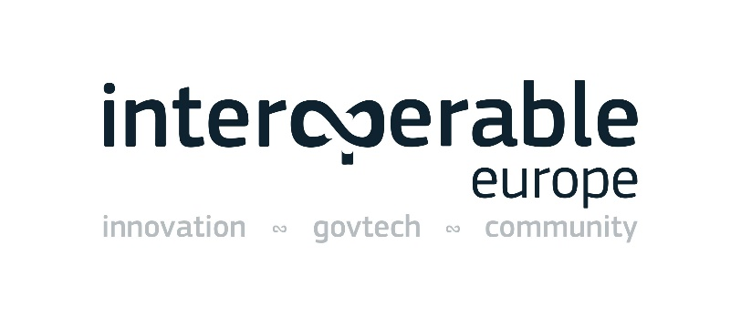

Digital Public Administration factsheet 2023
Slovakia
1 Interoperability State-of-Play 4
2 Digital Public Administration Political Communications 8
3 Digital Public Administration Legislation 18
4 Digital Public Administration Infrastructure 24
5 Digital Public Administration Governance 31
6 Cross-border Digital Public Administration Services 36

1
Interoperability State-of-Play
In 2017, the European Commission published the European Interoperability Framework (EIF) to give specific guidance on how to set up interoperable digital public services through a set of 47 recommendations divided in three pillars. The EIF Monitoring Mechanism (MM) was built on these pillars to evaluate the level of implementation of the framework within the Member States. Whereas during the previous, the MM relied upon three scoreboards, the 2022 edition includes an additional scoreboard on cross-border interoperability, assessing the level of implementation of 35 Recommendations. The mechanism is based on a set of 91 Key Performance Indicators (KPIs) clustered within the four scoreboards (Principles, Layers, Conceptual model and Cross-border interoperability), outlined below.
Source: European Interoperability Framework Monitoring Mechanism 2022
Each scoreboard breaks down the results into thematic areas (i.e. principles). The thematic areas are evaluated on a scale from one to four, where one means a lower level of implementation and four means a higher level of implementation. The graphs below show the result of the EIF MM data collection exercise for Slovakia in 2022, comparing it with the EU average as well as the performance of the country in 2021.
Source: European Interoperability Framework Monitoring Mechanism 2022
Slovakia’s results in Scoreboard 1 show an overall good implementation of the EIF principles. Slovakia meets the European average for most principles, except for Principles 1 (Subsidiarity and Proportionality), Principle 9 (Multilingualism), and Principle 12 (Assessment of Effectiveness and Efficiency). The lower-middle performance on these principles indicates that Slovakian public administrations should ensure that national interoperability frameworks and interoperability strategies are aligned with the EIF and, if needed, tailor and extend them to address the national context and need (Recommendation 1). Moreover, it could improve their use of information systems and technical architectures that cater for multilingualism when establishing a European public service (Recommendation 16), and foster the way in which they evaluate the effectiveness and efficiency of different interoperability solutions and technological options considering user needs, proportionality and balance between costs and benefits (Recommendation 19).
Source: European Interoperability Framework Monitoring Mechanism 2022
The Slovakian results for the implementation of the interoperability layers assessed for Scoreboard 2 shows a very good performance. Slovakia reaches a maximum score of 4, in line with the European average, for all interoperability layers. To maintain this high performance, an area of improvement linked to Interoperability governance could be for Slovak public administrations to participate more actively in the standardisation work relevant to the needs of all national public administrations to ensure that their requirements are met (Recommendation 24), and to better perceive data and information as a public asset that should be appropriately generated, collected, managed, shared, protected and preserved (Recommendation 30).
Source: European Interoperability Framework Monitoring Mechanism 2022
Slovakia’s scores assessing the Conceptual Model in Scoreboard 3 show an excellent performance in the implementation of all recommendations. A possible area of improvement concerns Open data, where the country could enhance the way in which it publishes open data in a machine-readable, non-proprietary formats (Recommendation 42). Similarly, Catalogues could be further improved by putting in place catalogues of public services, public data, and interoperability solutions and use common models for describing them (Recommendation 44).
Source: European Interoperability Framework Monitoring Mechanism 2022
The results of Slovakia concerning Cross-border interoperability in Scoreboard 4 show an at upper-middle performance of the country in 12 indicators. Particularly, Slovakia has a high performance above the EU average in Principle 7 (Inclusion and Accessibility) as well as Internal information sources and services, among others. However, the country still has margin for improvement in relation to Principles 9 (Multilingualism) and 10 (Administrative simplification). For instance, efforts could focus on using information systems and technical architectures that cater for multilingualism when establishing a European public service (Recommendation 16) as well as simplifying processes and use digital channels whenever appropriate for the delivery of such European public services (Recommendation 17).
Additional information on Bulgaria’s results on the EIF Monitoring Mechanism is available online through interactive dashboards.
Curious about the state-of-play on digital public administrations in this country? Please find here some relevant indicators and resources on this topic: |

2
Digital Public Administration Political Communications
Berlin Declaration on Digital Society and Value-Based Digital Government
In December 2020, the Slovak government signed the Berlin Declaration on Digital Society and Value-Based Digital Government, thus re-affirming its commitment – together with other European Union (EU) Member States – to foster digital transformation in order to allow citizens and businesses to harness the benefits and opportunities offered by modern digital technologies. The Declaration aims to contribute to a value-based digital transformation by addressing and strengthening digital participation and digital inclusion in European societies.


 2030 Strategy for the Digital Transformation of Slovakia and Action Plan 2023 - 2026
2030 Strategy for the Digital Transformation of Slovakia and Action Plan 2023 - 2026
The 2030 Strategy for the Digital Transformation of Slovakia framed the government strategy in a way that defined national policies and particular priorities with regard to the ongoing digital transformation of the economy and society.
The strategy followed up on the priorities of the EU Digital Single Market. At the national level, it accelerated ongoing processes in terms of building the digital market and carrying out various measures that arose from the most recent cross-sectoral policies of the EU. The strategy also reflected the strategic materials and recommendations of international organisations (EU, OECD, UN, G7 and G20) that consider digital transformation to be the key to inclusive and sustainable growth. The strategy puts emphasis on new digital technologies such as artificial intelligence, Internet of Things, 5G technology, big data and analytical processing of data, blockchain or high-performance computers, which will eventually become a new engine of economic growth and competitiveness.
Several areas were identified regarding the necessity to multiply the potential of digital transformation:
The targets of the process are the citizens, whose everyday life should get simpler, and entrepreneurs, whose businesses should be supported by various incentives and whose bureaucratic burden should be eliminated.
The strategy was followed by the 2019–2022 Action Plan for the Digital Transformation of Slovakia, which defined particular measures in several priority areas:
As for the digital government, the ambition is to launch and implement a ‘data-driven State’ concept in the public administration. The aim of the concept is for public administration to adopt decisions based on the best available knowledge. It is necessary to make sure that the institutions know how to use real data and make data-based (and possibly automated) decisions. Transforming the functioning of public administration organisations and processes is also key, so that such analyses can be effectively used. The action plan also proposed the continuous deployment of fully automated public administration services, meaning that the system handles filings automatically based on selected criteria.
On December 2022, the government of the Slovak Republic approved the Action Plan for Digital Transformation of Slovakia 2023–2026 aimed to increase the digitalization of the Slovak economy and targeting especially small and medium enterprises and innovative businesses. It focuses also on developing and deploying top digital technologies and on building a resilient society. It defines a framework to promote productivity and the knowledge economy, focusing on higher value-added segments, a more competitive economy and sustainable development. It also promotes a society that thrives in the digital age, but also learns to be resilient to the negative impacts of digital technologies.
National Digital Skills Strategy of the Slovak Republic and Action Plan for 2023–2026
The National Digital Skills Strategy and Action Plan for 2023–2026 was approved by the government in December 2022 and it contains six priority areas:
The main objectives are: (i) to strengthen the institutional background in order to create an effective coordination mechanism for digital skills within the public administration, public, academia or the business sector; (ii) to further develop digital skills of students and teachers at all levels of the educational process; (iii) to support the improvement of digital skills of active labour market participants and to support their upskilling or reskilling; (iv) to create favourable conditions for girls and women in the IT sector in order to increase their number, and (v) to help overcome the problem of digital divide and exclusion in Slovakia.
There will be regular evaluations and reporting of achievements every year to the Slovak Government.
National eGovernment Concept
The National Concept of Informatisation of Public Administration of the Slovak Republic, also known as the National eGovernment Concept, has been approved by the Slovak government in December 2021. The National eGovernment Concept will follow these strategic documents: the 2030 Vision and Strategy for Development of Slovakia, the 2030 Digital Transformation Strategy of Slovakia, and the National Cybersecurity Strategy 2021–2025. It contains seven strategic targets:
Every strategic target will be regularly evaluated based on indicators.
The National eGovernment Concept concerns all elements of public administration. It formulates a set of strategic goals, priorities and measures which aim to create a central architecture at the national level and to define policy, regulatory and other tools in order to build a controlled and effective level of informatisation in public administration. Currently a new Action Plan for the implementation of the intended goals is being prepared.
2014-2020 Operational Programme ‘Integrated Infrastructure’ & Programme Slovakia 2021 - 2027
The Operational Programme ‘Integrated Infrastructure’ (OPII) is a strategic document developed for the absorption of EU funds in the transport sector and in the area of enhancing access, use and quality of information technologies. The overall focus of the OPII, its specific objectives and activities were set to ensure the fulfilment of the Europe 2020 Strategy priorities and the National Reform Programme of the Slovak Republic.
The overall objective of the OPII was to support sustainable mobility, economic growth, and job creation, while improving the business climate through the development of transport infrastructure, public transport and information society.
The Ministry of Investments, Regional Development and Informatization of the Slovak Republic is responsible for the area of information society within the Operational Programme ‘Integrated Infrastructure’ – Priority Axis 7. Other objectives of the operational programme were managed by the Ministry of Transport of the Slovak Republic to support sustainable mobility, economic growth, job creation and improve the business environment through the development of transport infrastructure.
The Ministry of Investments, Regional Development and Informatization of the Slovak Republic acts as an intermediary body responsible for Priority Axis 7 - Information Society. The funds have been invested in the development of e-services for citizens and businesses, cybersecurity and cross-border interoperability to increase the availability of government data through open data. At the same time, the project ‘Promoting Digital Skills of Slovak Students’ was launched through cross-financing. At the same time, the public administration reform was supported by ICT, including the further expansion of the government cloud and the establishment of wi-fi access in public areas of towns and villages outside the Bratislava region.
This document has been adopted for 2014-2020, but thanks to the ‘n+3’ rule for project implementation, it is possible to implement OPII projects until the end of 2023. As a consequence, the actual duration of this programme is until 2023. As a follow up document for years 2021–2027, a new programme, called ‘Programme Slovakia 2021–2027’, was approved by the European Commission on 22 November 2022.
Strategic Document for Digital Growth and Next Generation Access Infrastructure (2014–2020)
The Strategic Document for Digital Growth and Next Generation Access Infrastructure (2014–2020) defined a strategy for the development of digital services and next generation access infrastructure in Slovakia. It focused on the fulfilment of the ex-ante conditionalities by means of which the EU evaluated the readiness of Member States to implement investment priorities of their choice. In particular, the document deals with communication technologies and information access, use and quality.
The strategy aimed to further develop digital infrastructure services and next generation networks in Slovakia for the 2014–2020 period. These could be summarised in the following eGovernment investment priorities emphasised in the 2014–2020 period:
The document served as a basis for the preparation of the Operational Programme ‘Integrated Infrastructure’ (Priority Axis - Information Society) for the 2014–2020 period. The document was approved by the government of the Slovak Republic on 8 January 2014. In November 2022, the European Commission has approved Programme Slovakia 2021–2027, within Policy Objective one (PO1). The PO “a more competitive and smarter Europe”, includes Specific Objective RSO 1.2 Reaping the benefits of digitisation for citizens, companies, research organisations and public authorities, RSO 1.4 Developing skills for smart specialisation, industrial transition and entrepreneurship and RSO 1.5 Enhancing digital connectivity. The listed specific objectives include the topic of digitalisation.
Proposal for the ESIF Programming Period 2021–2027
Negotiations for the new programming period began in early 2020. The Ministry of Investments, Regional Development and Informatization of the Slovak Republic proposed a follow-up strategy based on the current investments. The strategy had a higher focus on reducing bureaucracy for businesses and citizens, and the objective of speeding up the digital take-up with digital-by-default services. Moreover, it can be used to support data-driven governance, with more public sector data available, building the digital government structure as a platform based on open APIs. It will also increase the quality of public services thanks to continued feedback from the users.
The partnership agreement proposal released in December of 2020 includes policy objectives aligned with the government digitalisation through the development of the digital and data economy, the modernisation of public services, and the creation of smart regions and cities.
Programme Slovakia and Partner Agreement for 2021–2027
On 18 July 2022 a Partner Agreement for 2021–2027 for the Operational Programme Slovakia was approved. Its aim is to support science and research; build smart cities and regions; develop digital solutions for citizens, businesses, research organisations and public administrations; develop small and medium-sized enterprises; develop skills for smart specialisation, industrial transformation and entrepreneurship; and increase digital connectivity. Operational Programme Slovakia was approved on 22 November 2022.
New National eGovernment Concept
The New National eGovernment Concept, which was approved by the Slovak government in December 2021, contains the strategy to achieve interoperability of public administration services in Slovakia (e.g. data interoperability of information systems, semantic data interoperability, interoperability of publicly available open data from base registries published in the central portal of open data, interoperability of base registries, technological interoperability[1], and interoperability of government cloud).
 Action Plan for the Open Governance Initiative
Action Plan for the Open Governance Initiative
The Action Plan for the Open Governance Initiative in the Slovak Republic for the years 2022–2024 has been approved by Resolution of the Government of the Slovak Republic No. 457/2022. The Slovak Republic’s fifth action plan includes promising commitments on strengthening the protection of whistleblowers and expanding the number of companies disclosing beneficial ownership information. Existing data control mechanisms will need to be well-resourced to cope with the expectation of rapid beneficial ownership data disclosure. The action plan was adopted by the newly created Multi-Stakeholder Forum (MSF) dedicated to the OGP process. One of its commitments consists in measuring the impact of open data in pre-defined areas. The Data Office is currently preparing the methodology to measure this impact.
New National eGovernment Concept
The New National eGovernment Concept, which was approved by the Slovak Government in December 2021, operates with the concept of eID as one of the key enablers for government services.
National Cybersecurity Strategy 2021–2025
The National Cybersecurity Strategy 2021–2025 was approved by the government in January 2021. It was prepared by the National Security Authority of the Slovak Republic and it takes into account the principles listed in the Security Strategy and EU, NATO, OECD and UN strategies. Building on the cybersecurity strategy for the period 2015–2020, the strategic goals aim to serve the interests of the State and protect the services provided to citizens and businesses. Six principles are defined for the cybersecurity system:
The National Cybersecurity Strategy 2021–2025 pursues seven high-level (strategic) goals:
The Action Plan for the implementation of the National Cybersecurity Strategy for 2021–2025 was approved by the Government in July 2021. The Action Plan highlights more than 150 tasks for various entities, including all relevant stakeholders, and is followed by several strategic goals based on the National Cybersecurity Strategy. Fulfilment of the tasks is monitored by a special committee established by the National Security Authority.
New National Concept of Informatisation of Public Administration of the Slovak Republic
One of the aims of the New National Concept of Informatisation of Public Administration of the Slovak Republic, which was approved by the Slovak Government in December 2021, is to achieve the interconnection of public administration information systems and reference registries. The efficient interconnection of systems will allow to merge related services while minimising user interactions or the need for manual data entry by implementing reference data policies and common modules for process and data integration.
IT Procurement in the Public Administration
In May 2019, the Council for Digitalisation and the Digital Single Market of the Government of the Slovak Republic adopted the Concept for IT Procurement in the Public Administration. This concept is the result of the multi-stakeholder working group on ICT public procurement.
Proposal for the Centralisation and Development of Data Centres in the State Administration
In 2014, the Government of the Slovak Republic approved a Data Centre Strategy, whose main goal is to centralise the number of data centres of the State into just two facilities, under the scope of the Ministry of Finance and the Ministry of the Interior. Some of the cloud services included in the scope are, for example, IaaS, PaaS, and SaaS, and they benefited from high levels of quality and safety in the form of catalogue services.
A new National eGovernment Concept, approved by the Slovak Government in December 2021, includes a vision for data centres: they should have a comprehensive concept for building cloud computing services and data centres, including categorisation of data centres based on needs and active planning and area management.
Implementation Plan of the Research and Innovation Strategy for Smart Specialisation of the Slovak Republic (‘RIS3 IP’)
This implementation plan contains procedures and processes which need to be carried out in order to fulfil missing criteria in relation to thematic ex ante conditionality 1.1 for thematic objective 1. They include strengthening research, technological development and innovation and implementation of relevant investment priorities funded in the 2014–2020 programming period, as well as measures to which the Slovak Republic committed in the framework of the Operational Program ‘Research and Innovation’. Three basic areas of specialisation were approved, which were transformed into five intelligent specialisation domains (one of them being ‘Digital Slovakia’).
National Strategy and Action Plan to Improve the Position of Slovakia in the Digital Economy and Society Index
In May 2021, the government of the Slovak Republic approved the National Strategy and Action Plan to improve the position of Slovakia in the Digital Economy and Society Index (DESI), whose aim is to bring the country up to speed with the European digital economy level. It sets targets for each of the indicators measured in the DESI (connectivity, human capital, use of internet by citizens, integration of digital technology by businesses and digital public services). In order to achieve these strategic targets/priorities, specific tasks and measures were identified for each dimension.
 2030 Digital Transformation Strategy of Slovakia
2030 Digital Transformation Strategy of Slovakia
The 2030 Digital Transformation Strategy of Slovakia identifies several key technologies and technological areas that need to be supported by the government:
In order to carry out effective measures in the mentioned priority areas, it is necessary to strengthen the institutional background that constitutes the basis of the innovation ecosystem. The 2019–2022 Action Plan for Digital Transformation of Slovakia defined the ambition to create and strengthen the institutional background in order to bring the benefits of novel technologies across all economic and societal sectors. This could be achieved by supporting the set-up of the different areas in order to facilitate its uptake. The possible measures include:
In December 2022, Slovakia launched the 2023–2026 Action Plan for Digital Transformation of Slovakia, as a follow-up to the previous Action Plan. This is built upon the following pillars:
Permanent Commission for Ethics and for the Regulation of Artificial Intelligence
As one of the measures of the 2030 Strategy for the Digital Transformation of Slovakia, the Permanent Commission for Ethics and for the Regulation of Artificial Intelligence (AI) was set up in November 2020. The Permanent Commission for Ethics and for the Regulation of AI is an independent advisory body made of experts from various fields, who act in their own capacity. Its main goals are to assess ethical and regulatory framework issues arising from the development, deployment and use of AI technologies, as well as preparing opinions on legislation in the field of the ethical aspects of AI. The Commission may also comment on draft laws at national level or legislative acts at international level. It holds regular meetings over the year and it provides the Ministry of Investments, Regional Development and Informatisation of the Slovak Republic with its expertise in the area of AI and its regulation.
Participation in the European Blockchain Services Infrastructure
Slovakia has been a member of the European Blockchain Partnership since 2018 and part of the European Blockchain Services Infrastructure since 2020. Under the umbrella of the Recovery and Resilience Plan, Slovakia will invest into extending EBSI nodes within its borders. Slovakia will deploy a network of distributed blockchain nodes and fully participate in EBSI pilot projects. Slovakia aims to use EBSI infrastructure also in national eGovernment projects.
Involvement in the European Digital Innovation Hubs
The Slovak Recovery and Resilience Plan supports the overall takeover of cloud, big data and AI technologies by small and medium enterprises. This goal will be attained by building a network of European Digital Innovation Hubs (EDIH) and Digital Innovation Hubs (DIH) across Slovakia. The network will be spread regionally in order to ensure equal and easy access to services, and they will have a double function: first, they will map the stage of digital maturity of companies in the given region; and second, they will prepare and provide individual digital or technical solutions tailored to their clients. They will use solutions mostly based on new technologies, including cloud, big data and AI, plus other technologies and digital instruments mentioned in the Digital Europe programme.
All entities will provide tailor-made services to their clients - mostly SMEs, but they may also include public authorities and large companies. In Slovakia, one of the major barriers to adopt new technologies by businesses is a low capitalisation of SMEs specifically; therefore, the services offered by EDIHs/DIHs will be provided for free or for a price lower than the market price. The Hubs will be involved in the wider European network, which is being built with the financial support of the Digital Europe Programme. Four hubs were commissioned by the end of the 3rd quarter of 2022, as defined in the RRP: (i) ECDI Cassovium, (ii) Kempelenov inštitút inovatívnych technológií, (iii) Slovenské centrum digitálnych inovácií, and (iv) ZINTECH.
Digital and Data Transformation
The National Concept of Informatisation of Public Administration of the Slovak Republic contains a chapter, “Digital and data transformation”, which deals with services based on cloud.
No political communication has been adopted in this field to date.
Involvement in Quantum Research and High-Performance Computing
Slovakia contributes to quantum research and the high-performance computing (HPC) infrastructure. The goals are under the umbrella of the RRP. Slovakia is a member of EuroHPC, which has already started to launch dedicated calls for the development and deployment of supercomputers that will be integrated into high-performance computing infrastructure. Slovakia is preparing investment into the top European supercomputer with very high energy efficiency.
Moreover, as part of the RRP investments, Slovakia will create a quantum communication network of three links with twelve nodes between research and development centres across the country. The first six nodes will be put into operation before the end of 2023. Building on that, the infrastructure will be made available for industrial and public-sector users. Slovakia is also involved in the cross-border European project Quapital and, in October 2020, it established the first functional link between two capitals in the world: Bratislava and Vienna. The next phase of creating a quantum communication ecosystem will consist of extending the links to bordering countries and beyond. The quantum communication infrastructure consists of the following elements:
The Slovak RRP will co-finance the building of the QCI terrestrial network and the development of single quantum photon detectors. Besides that, international connections are planned with neighbour countries and satellite components in the future.
National Broadband Plan
In the course of 2020, experts prepared the National Broadband Plan, which was approved by the government of the Slovak Republic on 17 March 2021. The vision of Slovakia is to ensure access to a telecommunication infrastructure that will be able to fulfil the quality and capacity requirements of networks in terms of the Gigabit Society for all citizens, entrepreneurs and public administration. The fulfilment of this vision will be achieved by the following goals by 2030:
The mapping of broadband to addresses and the feasibility study of the National Broadband Plan are in the final stages.

National Broadband Plan Feasibility Study
The feasibility study for the National Broadband Plan was launched in May 2022. The aim of the feasibility study is to elaborate in more detail the rules, parameters and requirements for the preparation and implementation of broadband interventions. In January 2023, the 1st version of the feasibility study was presented to the relevant stakeholders. We expect to collect relevant comments from the expert community and deliver the final version of the feasibility study in April 2023. The next step will be the preparation of other necessary documents required for the implementation of the planned interventions.

Mapping of the High-speed Broadband Connectivity
The Ministry of Investments, Regional Development and Informatization of the Slovak Republic, in cooperation with the Regulatory Authority for Electronic Communications and Postal Services, started in November 2022 the implementation of mapping and public consultation on the availability of high-speed broadband connectivity (min. 1 Gbps) throughout Slovakia. The public consultation will collect information on the commercial plans of operators to cover Slovakia for the next 3 years (until 12/2025). On 4 November 2022, a working meeting was held to launch the mapping and public consultations, where the requirements for data collection on current and planned broadband coverage were presented and explained to the participants (companies operating on the telecommunications market). The deadline for the delivery of the data was set for 10 February 2023. 40 telecommunications operators provided the requested data. The data will be processed and by the end of April 2023 the status of white addresses in Slovakia will be assessed. Subsequently, this information will be used to prepare interventions to cover white addresses in Slovakia - in accordance with the rules on the use of public resources for these purposes.
No political communication has been adopted in this field to date.

3
Digital Public Administration Legislation
Information Technologies in the Public Sector Act No. 95/2019
The Information Technologies in the Public Sector Act No. 95/2019 (ITPS) was published in March 2019. The act repealed and amended the former law from 2006 as a reaction to the general advancement in the digitisation of the Slovak public sector. The Cybersecurity Act serves as national NIS-based legislation and it provides a general national cybersecurity framework for essential services, but it does not cover the public sector specifically. Therefore, this element was added to the new ITPS act. This act sets out cybersecurity measures specific for the public sector and it covers all public bodies, even those who do not meet the definition of ‘essential services operator’. The ITPS act also strengthens the competences in proactive Computer security incident response team (CSIRT) services of the Slovak government CSIRT, which include scanning, testing from the internet or governmental network, cybersecurity audits, and hardening or penetration testing of the public bodies' IT.
 Act No. 305/2013 on eGovernment
Act No. 305/2013 on eGovernment
The Parliament adopted Act No. 305/2013 on eGovernment in 2013. This act provides a legal framework for operation of public administration bodies in electronic manner, e.g. the number of key elements, such as pursuance by proxy, base registries, eDesk modules document conversion, electronic payment of fees, authentication of persons in public administration information systems, eDelivery, eForms, electronic personal mailbox and the administration and operation of a central portal for public administration and Integrated Service Points (ISPs) for assisted public administration eServices. Furthermore, it also laid down the foundation for a common data layer by defining a common central module for intergovernmental communication. This module implemented the rules and processes for data exchange among IT systems from different segments (see 4.2.4 Interconnection of Base Registries) and applied the concepts of Master Data Management. This act is updated regularly according to current needs and domestic or international requirements.
After 10 years of experience with regulation laid down by Act No. 305/2013, The Ministry of Investments, Regional Development and Informatization of the Slovak Republic has decided that it is necessary to adopt a new act on eGovernment. The main reasons for this decision were the overall developments in the IT sector and the fact that Act No. 305/2013 was designed with idea of digitalisation of traditional paper procedures from the official agenda (public services and official proceedings) provided to the public, which has become outdated. The new act on eGovernment naturally abandons that idea and aims to create a comprehensive digital alternative for the official agenda based on current needs and the currentcapabilities offered by information technologies. Legislative works on a new act on eGovernment have been initiated at the end of 2022 and it is expected to continue throughout 2023.
Amendment No. 134/2020 and No. 416/2020 to Act No. 305/2013 on eGovernment
The latest amendment to the eGovernment Act entered into force on 30 December 2020. The listed legislation introduced the following changes:
The Office of the Deputy Prime Minister for Investments and Informatisation of Slovakia, which was the administrator of the Central Government Portal, has been transformed into The Ministry of Investments, Regional Development and Informatization of the Slovak Republic; and
The Financial Administration of the Slovak Republic sends official documents only to electronic mailboxes on the Central Government Portal.
Implementing rules for the Act No. 95/2019 Coll. on Information Technologies in Public Administration:
The following decrees are meant to implement the Act No. 95/2019 Coll. on Information Technologies in Public Administration:
Act against Bureaucracy No. 177/2018
Act No. 177/2018 on measures to reduce the administrative burden by using public administration information systems (Act against Bureaucracy) came into force on 1 September 2018. According to the provisions of Par. 1 of the act, in the performance of their official tasks, public authorities are obliged and authorised to obtain and use data stored in public administration information systems to produce extracts, and to provide such data and extracts when necessary.
Moreover, an amendment to the Act against Bureaucracy No. 177/2018 eliminated the need for citizens to provide eleven types of paper documents in their dealings with the authorities.
The amendment to the Act against Bureaucracy (14 April 2019) relieved citizens and companies of their duty to submit further statements and confirmations by using the public administration information system. This resulted in less administrative burden and in simplified processes related to the confirmation of arrears within social insurance, health insurance calculations, confirmation of school visits and extracts from the register of NGOs.
In July 2021, the government of the Slovak Republic adopted an amendment to Act No. 177/2018. Following the amendment, the list of documents that citizens and businesses had to obtain and deliver to public authorities within their proceedings was further reduced by 21. Citizens will no longer be required to submit what accounted for more than 4 million papers per year, which will result in savings of approximately EUR 40 million per year. At the same time, The Ministry of Investments, Regional Development and Informatization of the Slovak Republic is in the process of implementing a unique systematic Data Program, which is aimed to support the implementation of data activities across the entire public administration in order to dynamise and digitally help the public administration.
The adoption of the amendment will enhance the automatisation of the processes and pro-active services of the State. The data automatically retrieved by public authorities from the available registries include birth, marriage and death certificates, confirmation of address changes, certificates stating the existence of a business subject, certificates proving a business is not in liquidation or bankrupt or that it does not employ workers illegally.
 Act on Data
Act on Data
The Slovak Act on Data aims to create a general regulation for data management of the public sector bodies which is an area that is not sufficiently and suitably covered by the existing legal regulation incorporated in previously mentioned acts. The Act on Data serves as an important part in the transformation of Slovakia into a truly digital State, i.e. a State that exploits the full potential of data in accordance with the interoperability principle, accessibility and data quality requirements. It will also help Slovakia become a State that makes its decisions on the basis of expert data from analyses, predictions and evaluations using current, available, accurate and complete data. The first legislative works on the Act on Data began already in 2018. Since then, the act has undergone a thorough elaboration, going from being a simple and very general regulation to a sophisticated and comprehensive one, which reflects contemporary needs in the field of public sector data management. The act sets out the rules for data sharing within the public sector itself and from the public sector to the public, implements MyData concept for natural person and legal entities, bolsters the existing open data regulation and enhances and improves public sector data accessibility for analytical purposes. It is expected that the Act on Data will be finished in 2023 and adopted in 2024.
Act on Free Access to Public Information No. 211/2000
The Act on Free Access to Information, which came into force on 1 January 2001, defined the term ‘public information’ and established a general principle of free and unlimited access. Under this act, any person or organisation can request information held by State agencies, municipalities and private organisations that make public decisions. The body has to respond no later than 10 days after receipt of the request and must keep a registry of requests. Costs are limited to reproduction and can be waived. There are a number of exemptions (e.g. for information classified as a State or professional secret, personal information, trade secrets, etc.), which can be withheld. Appeals are made to higher agencies and can be reviewed by a court.
Reuse of Public Sector Information
Slovakia notified the full transposition of Directive 2003/98/EC of the European Parliament and of the Council of 17 November 2003 on the re-use of public sector information (PSI Directive). This legislation was implemented by the Act No. 211/2000 on Free Access to Public Information.
As of 17 July 2021, the Directive 2003/98/EC of the European Parliament and of the Council of 17 November 2003 on the re-use of public sector information (PSI Directive) will be replaced by Directive (EU) 2019/1024 of the European Parliament and of the Council of 20 June 2019 on open data and the re-use of public sector information. This Directive will be transposed by the amendment to Act No. 211/2000 on Free Access to Public Information.
Act No. 272/2016 on Trust Services for Electronic Transactions in the Internal Market and amending certain laws (Trust Services Act) regulates the conditions for the provision of trust services, the obligations of trust service providers, the competence of the National Security Authority in the area of trust services and sanctions for breaches of obligations under a special regulation and this act.
In March 2018, the Act on Cybersecurity was published in the Collection of Laws as No. 69/2018. This legislation was the first legal norm governing cybersecurity within the Slovak Republic. It came into force on 1 April 2018. The act establishes minimum cybersecurity requirements, including incidents and notification procedures. It regulates: the jurisdiction of public administration bodies in the area of cybersecurity; the national strategy on cybersecurity; the cybersecurity Single Information System; the status and the obligations of essential services operators and digital service providers; the organisation and the competencies of CSIRT units; education and awareness building; and inspection mechanisms and sanctions.
The new act transposed the EU Directive on network and information security (NIS Directive) into the Slovak legal system.
An amendment to the Cybersecurity Act was approved in May 2021. The amendment aims to deal with certain open issues identified in practice since the relatively recent adoption of the Cybersecurity Act, most notably the precise extent of operators of essential services within the public services landscape of the Slovak Republic and particular dynamics of direct blocking of harmful content when a security incident takes place, among others.
The bill further aims to amend various other pieces of legislation with regards to cybersecurity and public administration IT systems in general, such as the Act on IT in Public Administration. Suggested changes to these other laws are mostly of technical nature, rescinding certain obsolete provisions, unifying the terminology used throughout related legislation to safeguard their smooth application, as well as conformity with applicable EU legislation.
The Cybersecurity Act might be subject to further amendments down the line in order to safeguard compliance with the upcoming NIS2 Directive following the adoption thereof.
Act No. 18/2018 on Personal Data Protection
Act No. 18/2018 implements the General Data Protection Regulation 2016/679 (GDPR) and transposes the Directive on the Protection of Natural Persons with regard to the Processing of Personal Data by Competent Authorities for the Purposes of the Prevention, Investigation, Detection or Prosecution of Criminal Offences or the Execution of Criminal Penalties, and on the Free Movement of such Data (2016/680).
This Act regulates:
Reference Registries Framework in the eGovernment Act
The basic legislative framework related to the base and reference registries and their mutual interconnection is defined in Act No. 305/2013 on eGovernment. Its sixth part contains basic rules for equating data, referencing and correcting data between the registries, as well as rules on obligations of registries administrators. Specific rules regarding the respective registries, including the extent of their data and the opportunities for other entities to access them for specific purposes, are defined in the regulations which created them. The eGovernment Act also created rules for the establishment of a common central process and data integration module, which:
At the end of 2018, Slovakia adopted the Act No. 177/2018 against Bureaucracy, which introduced the obligation for public authorities to automatically and electronically exchange the data stored in their information systems without requesting them from citizens or businesses, following the Once-Only principle. The Act against Bureaucracy was amended in 2021 with the purpose to extend the above-mentioned obligation of public authorities to other official public information systems. The act is supported by the establishment of the Data Office, which implements the policy and its principles in public sector data management.
The interconnection of registries and the exchange of data between public authorities was supported by the Ministry of Investments, Regional Development and Information of the Slovak Republic through the establishment of the Data Office at the beginning of 2019. The Data Office is responsible for implementing the policy and the principles in public sector data management. It also works towards a central data model by mapping out the relations between data and registries. The Data Office also oversees data quality, the publication of reference data, open data, the access to MyData and consolidates an analytical background available for policy making.
In Slovakia there are currently the following reference registers: (i) Register of addresses; (ii) Register of legal persons, entrepreneurs and public administration organs; (iii) Register of natural persons; (iv) Information system of employment, and (v) Register of tax entities.
The Act No. 95/2013 on Public Procurement, which entered into force on 1 July 2013, amended Act No. 25/2006 on Public Procurement. This legislation implemented Directive 2007/66/EC of the European Parliament. The amendment provided further details on the regulation of review procedures, harmonised the standstill periods applied in the procurement process with the periods laid down in the Directive, and regulated the entire supervision process directly in the Public Procurement Act. The new Act No. 343/2015 Coll. on Public Procurement, which regulates public procurement in Slovakia, has been adopted in 2015.
 eInvoicing Legislation
eInvoicing Legislation
In Slovakia, the competent authority for eInvoicing is the Ministry of Finance. The eInvoicing platform was launched in May 2022. By the end of Q3 2023, it will be mandatory to use the eInvoicing platform for all State and public administration entities. The Ministry of Finance and the Office for Public Procurement are the responsible bodies for the transposition and implementation of Directive 2014/55/EC. The Directive was transposed into the Slovak legislation by means of Act No. 215/2019, which entered into force on 1 August 2019.
The Act No. 22/2004 on Electronic Commerce, which came into force on 1 February 2004, regulates the relationships between information society service providers and recipients that may arise when the communication takes place remotely, or while electronic devices are connected by means of an electronic communication network. These can be based on electronic processing, transmission, storage, search or collection of data including text, sound and picture, supervision over compliance with this Act, and also international cooperation in electronic commerce.
No legislation has been adopted in this field to date.
No legislation has been adopted in this field to date.
No legislation has been adopted in this field to date.
Act No. 95/2019 on Cloud computing
The institutionalisation of the government cloud was done in 2017. Cloud computing is currently regulated by Act No. 95/2019 Coll. on information technologies in public administration (§24a). A government cloud is cloud computing operated in the form of a hybrid cloud, which is made up of government cloud services.
No legislation has been adopted in this field to date.
No legislation has been adopted in this field to date.
Act No. 452/2021 on Electronic Communications
The Act No. 452/2021 coll. on electronic communications was adopted and it became effective as of 1 February 2022.
No legislation has been adopted in this field to date.

4
Digital Public Administration Infrastructure
[A picture could be included here]
Central Government Portal
The main purpose of the Central Government Portal “slovensko.sk” is to provide services to the public (natural persons as well as businesses) and public authorities by means of an information system with a single access point. The basis for all future activities of the Central Government Portal is the entry point which allows user authentication, login, data reception and transactions with a particular service provider. The Central Government Portal is an information system designed to provide services and information to the public through the common internet access point. The portal is governed by the provisions of Act No. 95/2019 on Public Administration Information Technologies and Act No. 305/2013 on eGovernment. It also serves as the Single Digital Gateway in Slovakia.
The portal features ten different modules:
Anti-Bureaucracy Portal
The Central Anti-Bureaucracy Portal “oversi.gov.sk” offers a way for public institutions to access any necessary statements and confirmations issued by other public institutions in order to apply the principles foreseen by the Anti-Bureaucracy Act and all its amendments.
Portal of The Ministry of Investments, Regional Development and Informatization of the Slovak Republic
The official portal of The Ministry of Investments, Regional Development and Informatization of the Slovak Republic is called mirri.gov.sk. The website offers an overview of the projects and work done by the Ministry in the area of implementing information technologies into public administration. It also offers a summary of all relevant legislation and strategic documents guiding the informatisation process.
Portals of Public Authorities
The national administration section and self-government portals belong to the respective administrators. The administration section and self-government portals provide more detailed information for citizens and businesses and may enable the performance of transaction services within the relevant special agendas.
Legislative and Information Portal
The legislative and information portal Slov-Lex provides information to professionals and to the general public on law-related issues. It provides effective tools to law makers for the creation of legislation and the relevant lifecycle management. The main parts of Slov-Lex are two closely linked systems: eCollection and eLegislation.
Target audiences include rights holders, i.e. government bodies, State administration bodies, local authorities, judicial authorities, legal professionals (lawyers, notaries, experts, etc.), freelancers, entrepreneurs (natural and legal persons) and citizens.
Public Authorities’ Portals (Self-government Portals)
Digital self-government portals in Slovakia are dedicated to citizens and entrepreneurs in certain administrative regions.
GovNet, which was launched in the early 1990s, aims to build a physical network of public administration bodies. GovNet provides the public with administration services such as encrypted eCommunication, a helpdesk, supervision, webhosting, antispam and antivirus protection, and represents the essential component of the national central communication infrastructure.
Portal for Employees of the State Administration
The central portal “oversi.sk” offers a way for public institutions to access any necessary statements and confirmations issued by other public institutions in order to apply the principles foreseen by the Anti-bureaucracy Act. It is accessible after registration into the portal.
Government Cloud
On 21 May 2014, the government of the Slovak Republic approved a new strategic approach whose main goal was to define the technical, organisational and legal levels of implementation and operation of supra-ministerial data centres as providers of government cloud services. The eGovernment cloud provides national authorities and institutions with cloud services (such as IaaS, PaaS, SaaS), which meet high standards of quality and safety, through a one-stop shop in the form of a service catalogue.
The cloud solution will ensure effective sharing of ICT resources, improve access to data and facilitate the use of big data, as well as unify the environment and methodologies for information systems development and operation.
Open Data Portal
The open data portal of Slovakia, data.gov.sk, was created as part of the Initiative for Open Government. The aim of the portal is to improve public services governance and administration by increasing transparency, efficiency and accountability. In practice, data.gov.sk offers a catalogue of datasets shared by various entities of the Slovak Republic. The administrator of the data.gov.sk portal is The National Agency for Network and Electronic Services.
On 1 December 2013, the Ministry of the Interior of the Slovak Republic started issuing eID cards to citizens as a means of identification and authentication for individuals within the eGovernment and possibly other public and private services. The new eID card, having the shape of a credit card, replaces the existing national identity card and includes the optional electronic signature functionality.
By using a microchip, the card provides an online authentication functionality, applicable to eGovernment transactions. Data from eID cards can only be read with the consent of the citizen, using a security code and inserting the eID card in the card reader. The safety of the data stored in the contact chip is protected by security mechanisms and by a personal security code (PSC). The PSC is a combination of several numbers that are chosen by the holder when applying for the eID, when collecting the card or anytime during its validity. The PSC is used to confirm the identity of eID holders in electronic communications.
 Application ‘Slovakia in Mobile’ (Slovensko v Mobile)
Application ‘Slovakia in Mobile’ (Slovensko v Mobile)
On 20 June 2022, the first phase of the Slovakia in Mobile (SvM) project was presented. It enables access to the government electronic services such as slovensko.sk portal or the electronic mailboxes via a smartphone using a mobile key. This means that users can login into government services without an ID card reader.
Slovakia in mobile is gradually being implemented in several phases. The first step is the Mobile ID, thanks to which, after initial activation, you can log in to slovensko.sk without a reader and an ID card with a chip simply by using the application.
Trust Services
Since 2018, the National Agency for Network and Electronic Services has been a trust service provider of the trust service for preservation of qualified electronic signatures and seals. The Agency has been providing the following qualifies trusted services through the Slovak National Certification Authority since 2019: the creation, verification, and validation of electronic signatures, electronic seals or electronic time stamps and certificates related to those services; the creation, verification, and validation of certificates for website authentication; the preservation of electronic signatures, seals or certificates related to those services.
Cybersecurity Competence and Certification Centre
The Cybersecurity Competence and Certification Centre was established on 1 January 2020 and acts as the national sectoral and technological research centre in the field of cyber security. It provides services related to the organisation and technical provision of educational activities; it offers consulting activities in the field of protection of classified information, cyber security and trust services, and it organises educational events, courses, training and seminars.
Information System for Electronic Public Procurement
The Public Procurement Office manages the eProcurement system (IS EVO) used to award contracts above and below a specific threshold, as well as low value contracts. The IS EVO covers the different phases of procurement, which are: eNotification, eDiscovery, eAccess, eSubmission and eAuction (lowest price and MEAT criteria). The basic functions of IS EVO are:
The IS EVO is not mandatory pursuant to the Law on public procurement. There are 12 information systems providing electronic communication in public procurement in Slovakia. The IS EVO is used in 50% of all published contracts. The Ministry of the Interior manages the Electronic Contracting System (EKS), which is used for a fully automated placement of orders for contracts below the threshold.
eInvoicing Information System
In 2019, the eInvoicing Information System project feasibility study was approved. The Ministry of Finance of the Slovak Republic oversees matters pertaining to eInvoicing, including the management of the related information system and the central economic system. The corresponding information system, which was launched in May 2022, offers an interface for issuing, sending and receiving electronic invoices which should be processed automatically, if possible, in compliance with the relevant national and EU legislation on trade relations between economic subjects within public procurement processes.
The system also defines invoicing standards for trade relations with public authorities. It helps to speed up issuing, receiving and processing invoices, as well as ensure costs savings.
Payment module
Following the eGovernment Act No. 305/2013, a payment module was established in order to facilitate payments of administrative fees or other payments to public authorities. The module consists of a communication part and an administrative part: the former gives updates on payments, while the latter provides records of the payments and all necessary details for the creation of payment orders.
The Ministry of Investments, Regional Development and Informatization of the Slovak Republic manages the communication part, while the administrative part is managed by the Ministry of Finance of the Slovak Republic. There are two modules in operation – the electronic payments module and the information system to make administrative and court fees payment and to obtain payment records.
The Central Government Portal, under the administration of The Ministry of Investments, Regional Development and Informatization of the Slovak Republic and operated by the National Agency for Network and Electronic Services (NASES), provides central and unified access to information resources and services of the public administration. The basis for all future activities of the Central Government Portal is the entry point, which enables user authentication, login, data reception and transactions with a particular service provider. Among the tasks of the portal, the most important are directing the interested party to a particular eGovernment service, navigating through the services relevant to a specific life event, and providing useful tips and tricks. The portal currently offers eGovernment services in the areas of running a business, citizenship, justice, registering vehicles, social security and more.
The Portal provides:
For citizens, the Central Government Portal is:
For public authorities, the Central Government Portal is:
Following EU Regulation 910/2014 on eIDAS, in September 2018 Slovakia launched an option for foreign natural persons to log into its online public services with a foreign means of electronic identification (e.g. ID or residence card) via Slovakia’s central government portal slovensko.sk.
The possibility to log on all specialised portals of public administration bodies in Slovakia through eIDAS Node has existed since February 2019. The English login page offers users multiple options, including the use of a foreign eIDAS, notified means for electronic identification, a Slovak eID, the use of residence cards, and other alternative authenticators. The number of available foreign eIDAS from different countries that can be used on the portal slovensko.sk is steadily growing according to the notification process in accordance with Regulation (EU) No. 910/2014. In 2019, only 89 logins had been recorded by foreigners, but in 2020 this number rose to 1 435 logins and in 2021 to 7 043 logins.
At the end of 2019, Slovakia notified the creation of its eID scheme. Users can log in via eIDAS Node on www.slovensko.sk and other Slovak portals integrated using WebSSO. This login is meant for holders of an identification tool issued in EU Member States. In case of slovensko.sk, users can also enter the electronic mailbox. Slovak eID can be currently used in these countries: Austria, Belgium, Croatia, Cyprus, the Czech Republic, Denmark, Estonia, Finland, Germany, Italy, Latvia, Lithuania, Luxembourg, Malta, the Netherlands, Poland, Portugal, Slovenia, Spain, and Sweden. A rise in the number of Slovaks using eID abroad has also been reported. Indeed, in 2019 the service did not register any logins, but in 2020 it registered 14 902 logins and in 2021 42 625 logins. In 2022 there have been 13 901 logins of foreigners using eIDAS and 40 966 logins of Slovak nationals.
Single Digital Gateway
Since December 2020, the government portal slovensko.sk has served as Single Digital Gateway according to Regulation No. 2018/1724. The information part, which can be found in the ‘Life events’ section, is available in Slovak and English. The information content is continuously updated according to legislative changes and reports of individual Ministries (coordinators).
Common Modules
Public authorities are obliged to use common modules among public administration information systems while performing their roles and exercising their powers electronically. Common modules ensure that there is no need to mutually integrate all information systems with one another, because each public authority integrates with these common modules where the communication and exchange of data take place.
The Module for Data and Process Integration is one of the common modules and it serves as a unified mechanism to provide data to public authorities. It contains a central system of reference for data management, which provides base registries in Slovakia (the so-called ‘reference registries’), as well as other standards for public administration information systems aimed to achieve technical and semantic compatibility of the respective information systems and their data.
The Ministry of Investments, Regional Development and Informatization of the Slovak Republic manages the Module for Data and Process Integration.
Triple Helix Platforms
In the near future, Slovakia intends to create State, academic and business consortia in the triple helix model (Triple Helix Platforms), to support the development in fields such as artificial intelligence or blockchain. Triple Helix platforms should also serve as basic contact points for projects directly managed with EU funds.
No digital public administration infrastructure has been adopted in this field to date.
No digital public administration infrastructure has been adopted in this field to date.
eGovernment Cloud
The eGovernment cloud provides national authorities and institutions with cloud services (such as IaaS, PaaS, SaaS), which meet high standards of quality and safety, through a one-stop shop in the form of a service catalogue. The cloud solution will ensure effective sharing of ICT resources, improve access to data and facilitate the use of big data, as well as unify the environment and methodologies for information systems development and operation.
No digital public administration infrastructure has been adopted in this field to date.
In Slovakia, the informal Slovak National Research Platform for Quantum Technologies was established in 2018 and was transformed into the National Centre for Quantum Technologies at the end of 2021 under the auspices of The Ministry of Investments, Regional Development and Informatization and the Ministry of Education, Science, Research and Sport, with participation of the Physics Institute of the Slovak Academy of Sciences and National Security Agency. It represents the Slovak research community working in the area of quantum technologies. Its main goal is to support research in accordance with the Quantum Flagship initiative of the European Commission. It aims to create conditions to increase competitiveness and Slovakia's excellence in research and innovation in the field of quantum technologies, which will play a key role in future industrial and safety applications.
High-performance Computing
In November 2020, the National Super-Computing Centre in Slovakia was established. This Centre is based on a consortium made up of the Centre of Operations of the Slovak Academy of Sciences (CSČ SAV), The Ministry of Investments, Regional Development and Informatization of the Slovak Republic and the I4DI Association (Innovations for Digital Infrastructure). It aims to develop High-Performance Computing activities in Slovakia. Its vision is to build a new supercomputer that could enable extensive and efficient use of HPC technologies and the use of high-performance data analytics tools, artificial intelligence and machine learning. It will also try to improve competencies among Slovaks in these areas by providing free consultations and educational activities for small and medium-sized enterprises, industrial companies, public administration entities and academic institutions.
Connection of households to FTTx
In Slovakia there is approximately 1/3 of households connected to FTTx (speed from 15 Mbps to 1 Gbps). This infrastructure was built by private companies.
No digital public administration infrastructure has been adopted in this field to date.
[A picture could be included here]

5
Digital Public Administration Governance
For more details on Slovakia’s responsible bodies for digital policy and interoperability, its main actors, as well as relevant digital initiatives, please visit the NIFO collection on Joinup.
Ministry of Investments, Regional Development and Informatisation of the Slovak Republic
The Ministry of Investments, Regional Development and Informatization of the Slovak Republic (hereinafter the Ministry) is a central public authority body which succeeded the former Deputy Prime Minister’s Office for Investments, Regional Development and Informatisation of the Slovak Republic on 1 July 2020. Among the main tasks of the Ministry is the creation and the implementation of a uniform State policy towards EU funds, e.g. in the field of informatisation of society, eGovernment and investments. The Ministry performs tasks that stem from the membership of the Slovak Republic in international organisations, being an intermediary body that manages the Operational Programme ‘Integrated Infrastructure’ (OPII), Priority Axis 7 and the Digital Single Market policy on the national level. The Ministry also provides for the performance of obligations resulting from binding international treaties and conventions and fall under the scope of competences of the Ministry.
Within The Ministry of Investments, Regional Development and Informatization, four divisions perform tasks related to the informatisation of the public administration and the broader digitalisation of society: the Public Administration Information Technologies Division, the Digital Agenda Division, the Cybersecurity Division and the Division of the Intermediary Body for the Informatisation of Society. The different divisions are organised as follows:
Government Council for Digitalisation of the Public Administration and the Digital Single Market of the Slovak Republic
The Council for Digitalisation of the Public Administration and the Digital Single Market of the Slovak Republic, founded in December 2015, is the advisory and coordinating body, with right of initiative, of the Slovak government. It focuses on the issues related to informatisation and digitisation of public administration and the DSM. The Council is composed of high-level representatives from Ministries and IT associations.
Working Group for Digital transformation of Slovakia
The Working Group for Digital Transformation of Slovakia was established after the approval of the Action Plan for Digital Transformation of Slovakia for 2019–2022. Its main task is to provide assistance to The Ministry of Investments, Regional Development and Informatization of the Slovak Republic for the implementation of the Action Plan. It consists of representatives from different Ministries, main actors and promoters of individual measures, as well as public experts. One of its tasks is also to assess new technological trends that may have impact on the scope of the Action Plan. It should also contribute to the timely evaluation of the relevant measures in terms of their real contribution. Where necessary, it will contribute to the development of Slovakia's positions for the purpose of negotiations in committees and working groups of the EU institutions, recommend innovations in particular areas and assist with the implementation of changes. It reports to the Government Council for Digitalisation of the Public Administration and the Digital Single Market of the Slovak Republic.
National Agency for Network and Electronic Services
The National Agency for Network and Electronic Services (NASES) is an contributory organisation of The Ministry of Investments, Regional Development and Informatization of the Slovak Republic. It fulfils professional tasks in the field of informatisation of society and management and operation of electronic communications networks. Its main task and subject of activity is the administration, operation and development of the government data network GOVNET and the operation and development of the services of the Central Government Portal, as basic tools of public administration informatisation in Slovakia.
The agency supports the development of eGovernment services in Slovakia and is a provider of central common information systems. This activity improves the effectiveness of public administration and simplifies the interaction between citizens and authorities, besides supporting the information knowledge base of society, the public sphere, the business community and the general public.
The key tasks of NASES are:
National Security Authority
The National Security Authority (NSA) is the central government body for the protection of classified information, cryptographic services, trust services and cybersecurity. The recent change brought on by the EU Regulation on Electronic Identification and Trust Services (eIDAS) and the Act on Trust Services, generated a change in the NSA’s scope of responsibilities with respect to the use of the electronic signature and other related services, the so-called trust services.
According to eIDAS, Member States shall designate a supervisory body established in their territory. This body carries out supervisory tasks in a particular Member State. The NSA is the supervisory authority in the Slovak Republic. A ‘trust services oversight scheme’ is published to ensure that common basic supervisory requirements are met and to ensure a comparable security level of qualified trust services throughout the Union.
Slovakia IT
The State-owned company Slovakia IT was established in September 2020. It aims to provide comprehensive IT services (e.g. simplification of processes of public services, development of stable information systems, and improving the accessibility of services for citizens); develop innovation and cloud solutions for State-owned enterprises and institutions; and develop mobile applications.
Computer Security Incident Response Team Slovakia
The Computer Security Incident Response Team Slovakia (CSIRT.SK) was based on Act No. 69/2018 Coll. on Cybersecurity, as amended, to ensure adequate protection of the national information and communication infrastructure and critical information infrastructure. It is an independent unit of The Ministry of Investments, Regional Development and Informatization of the Slovak Republic, which provides services associated with security incidents handling and impact elimination, followed by the recovery of affected information and communication technologies for all public services. It also provides preventive and educational services.
National Cybersecurity Centre
The National Cybersecurity Centre (SK-CER) was established on 1 September 2019. It carries out national and strategic activities in the field of cybersecurity management, threat analysis, as well as coordination of national security incident handling and response. The SK-CER also aids in the following areas: governance; development, management and support of training; educational activities; awareness raising; and research.
The Ministry of Investments, Regional Development and Informatization of the Slovak Republic has created the Data Office. The office, which operates on a national and subnational level, oversees the integration of processes and data from all base registries by managing an information system for the central management of reference data. Public authorities can integrate this information system and access available public sector data in compliance with the Once-Only principle. It also manages data interoperability through a central data model and it has a coordinating role in the field of open data.
Office for Personal Data Protection
The Office for Personal Data Protection of the Slovak Republic is an independent State authority which is in charge of data protection supervision. It also contributes to the protection of fundamental rights and freedoms of citizens with regard to the processing of their personal data.
Broadband Competence Office
The Broadband Competence Office was established in January 2020 in cooperation between the Regulation Office of the Slovak Republic and The Ministry of Investments, Regional Development and Informatization. It is part of a Europe-wide Broadband Competence Offices network between Member States (or regions). Its main task is to meet the objectives of the National Broadband Plan. Other tasks include: strategic planning for broadband deployment, monitoring of the implementation of development plans in the field of communication infrastructure, management of public consultations with telecommunications operators, mapping the communication infrastructure, management of state interventions in the field of communication infrastructure, provision of technical and economic information, expertise of administrative capacities of public authorities in planning, implementation and monitoring of broadband projects.
National Platform for the AI development in Slovakia (AIslovakIA)
AIslovakIA is a neutral, independent and non-profit platform with an ambition to develop excellence and to bring together experts and those interested in AI in Slovakia. The national platform of artificial intelligence (AIslovakIA) is part of the Center for Artificial Intelligence. The vision of the platform is to create a space for active cooperation of the academic community with representatives of employers, government representatives, representatives of international institutions or individuals in order to fully develop the potential of artificial intelligence in Slovakia and beyond.
Association of Towns and Municipalities of Slovakia
The Association of Towns and Municipalities of Slovakia (ZMOS) designed and developed the ISOMI, an internet information system for towns and municipalities. The project was designed to host and integrate municipal websites to support municipalities in providing citizens with information and eServices. Furthermore, the association operates the DCOM (Municipal Data Centre) solution, which offers eServices to citizens at town and municipality level.
DEUS Association
The DEUS Association is the datacentre for the informatisation of the local self-governments of Slovakia. Its priority is to promote electronic communication between all the different levels of government and citizens. The association is in charge of managing the electronic systems of self-governing cities and villages. It cooperates with suppliers who administer these systems to cities and villages.
The association was founded as an association of legal persons with the signing of the memorandum in July 2011. The founding members were the Ministry of Finance of the Slovak Republic and the Association of Towns and Municipalities. The DEUS Association manages the DCOM.

6
Cross-border Digital
Public Administration Services
Further to the information on national digital public services provided in the previous chapters, this final chapter presents an overview of the basic cross-border public services provided to citizens and businesses in other European countries. Your Europe is taken as reference, as it is the EU one-stop shop which aims to simplify the life of both citizens and businesses by avoiding unnecessary inconvenience and red tape in regard to ‘life and travel’, as well as ‘doing business’ abroad. In order to do so, Your Europe offers information on basic rights under EU law, but also on how these rights are implemented in each individual country (where information has been provided by the national authorities). Free email or telephone contact with EU assistance services, to get more personalised or detailed help and advice is also available.
Please note that, in most cases, the EU rights described in Your Europe apply to all EU member countries plus Iceland, Liechtenstein and Norway, and sometimes to Switzerland. Information on Your Europe is provided by the relevant departments of the European Commission and complemented by content provided by the authorities of every country it covers. As the website consists of two sections - one for citizens and one for businesses, both managed by DG Internal Market, Industry, Entrepreneurship and SMEs (DG GROW) - below the main groups of services for each section are listed.
For citizens, the following groups of services can be found on the website:
Regarding businesses, the groups of services on the website concern:
last update: June 2023
The Digital Public Administration Factsheets
The factsheets present an overview of the state and progress of Digital Public Administration and Interoperability within European countries.
The factsheets are published on the Joinup platform, which is a joint initiative by the Directorate General for Informatics (DG DIGIT) and the Directorate General for Communications Networks, Content & Technology (DG CONNECT). This factsheet received valuable contribution from Lenka Žuborová, Nadežda Nikšová, Barbora Sedalová, Juraj Kubica and Markéta Šimoni from Ministry of Investments, Regional Development and Informatisation of the Slovak Republic and Filip Švantner from National Agency for Network and Electronic Services.
The Digital Public Administration factsheets are prepared for the European Commission by Wavestone.
An action supported by Interoperable Europe
The ISA² Programme has evolved into Interoperable Europe - the initiative of the European Commission for a reinforced interoperability policy.
The work of the European Commission and its partners in public administrations across Europe to enhance interoperability continues at full speed despite the end of the ISA2 programme. Indeed, enhanced interoperability will be necessary to unlock the potential of data use and reuse for improved public services, to enable cross-border collaboration, and to support the sector-specific policy goals set by the Commission for the future.
Interoperable Europe will lead the process of achieving these goals and creating a reinforced interoperability policy that will work for everyone. The initiative is supported by the Digital Europe Programme.
Follow us
Interoperable Europe

Technological interoperability in this context means that public administration software and hardware must comply with standards that support the interoperability of data, applications and technologies throughout the European area. ↑
 @
@